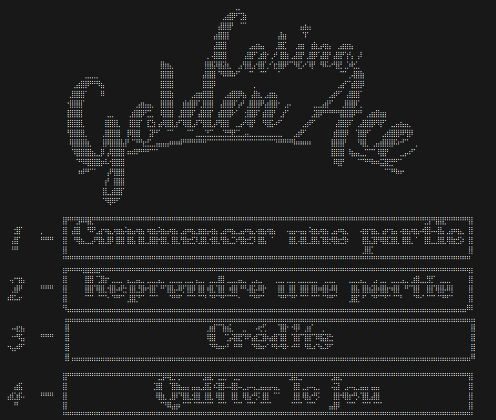

Projets Principaux & Expériences
Développement Java & Algorithmique
Description du projet:
Mazel est un jeu de labyrinthe développé en Java et JavaFX. Il intègre un algorithme de génération de labythnes aléatoires. C'est un jeu qui possède deux modes distincts.
- Le premier est un mode de progression accessible lorsqu'un utilisateur se "connecte" via un mot de passe reconnu par le système.
- Le second est un mode créatif de labyrinthes, personnalisables par le joueur.
Le jeu a été développé en équipe de quatre personnes, sur une durée de deux mois.
Ce que ce projet m'a apporté
Ce projet m'a permis de développer mes compétences en programmation Java et en utilisation de JavaFX. J'ai également approfondi mes connaissances en algorithmes de génération de labyrinthes .
Pour utiliser une structure MVC dans notre projet, nous l'avons à de nombreuses reprises refactorisé pour l'adapter à nos besoins, ce qui m'a permis de mieux comprendre les avantages et les inconvénients de cette architecture.
Cela m'a permis également de me rendre compte de l'importance de concevoir un projet de manière modulaire et évolutive, en anticipant les besoins futurs et en adoptant des pratiques de développement telles que le TDD et les principes SOLID, et ce dès le départ.

Outils employés :
- Java et JavaFX
- Patron de conception MVC et Observers
- Utilisation du TDD et principes SOLID
Compétences techniques (hard skills) :
- Gestion de fichiers CSV avec Java
- Interface responsive avec SceneBuilder
- Algorithmes de labyrinthe
Compétences transversales (soft skills) :
- Travail en équipe
- Résolution de problèmes
- Communication
- Gestion du temps
Description du projet:
Golden Ace est un mini-jeu de casino développé en Java dans le cadre d'un projet agile, jouable via le terminal.
Il s'agit donc d'un jeu composés en réalité de mini-jeu, qui sont les suivants : Black Jack, Roulette, Démineur, Machine à sous.
Au début du jeu, le joueur reçoit une somme d'argent virtuelle, et peut choisir à quel mini-jeu il souhaite jouer. En fonction de ses choix et de sa chance, il peut gagner ou perdre de l'argent virtuel.
Projet réalisé en équipe de six personnes sur une durée de quatre jours.
Ce que ce projet m'a apporté
L'enjeu principal de ce projet était de réussir à développer un projet en équipe dans un délai très court, en utilisant une méthodologie agile. Cela m'a permis de développer mes compétences en gestion de projet, en communication et en travail d'équipe.
En particulier, comme nos équipes étaient composées de personnes qui ne se connaissaient pas, ce qui a rendu la communication et la coordination plus difficiles, mais aussi plus enrichissantes.
J'ai ainsi apris à m'adapter à des styles de travail différents, à gérer les conflits et à trouver des solutions rapidement pour respecter les délais.
Cela m'a persis également de me familiariser avec les principes de la méthodologie agile, tels que les sprints, les stand-up meetings et les rétrospectives, et de comprendre comment ces pratiques peuvent améliorer la productivité et la qualité du travail en équipe.

Outils employés :
- Java & Git
- Méthode Scrum / Kanban
- Diagrammes UML
Compétences techniques (hard skills) :
- Développement rapide en équipe
- Gestion de projet agile
- Communication et coordination en équipe
Compétences transversales (soft skills) :
- Communication
- Gestion du temps
- Adaptabilité
- Résolution de problèmes
- Collaboration
PokéQuizAdventures
NOVEMBRE 2024 - JANVIER 2025
Création d'un jeu ludo-pédagogique
Description du projet:
Jeu proposant d'incarner un pokémon et son dresseur. Le joueur doit répondre à des questions de culture générale pour avancer.
Implémenté en iJava (version simplifiée sans concept Objet pour l'apprentissage de la logique de l'algorithmique, et de la compréhension des concepts de base).
Projet réalisé en binôme sur une durée de deux mois.
Ce que ce projet m'a apporté
Ce projet m'a permis de développer mes compétences en logique de programmation et à me familiariser avec le language java.
J'ai également appris à concevoir un projet de manière modulaire, en utilisant des fonctions génériques pour éviter la redondance du code et faciliter la maintenance du projet.
J'ai également appris à gérer un petit projet en équipe, en communiquant efficacement avec mes coéquipiers et en respectant les délais impartis.
Outils employés :
- iJava
- Terminal bash (affichage)
Compétences techniques (hard skills) :
- Logique de programmation
- Mise en forme terminal (ASCII Art)
- Utilisation de fonctions génériques
- Apprentissage de l'algorithmique
Compétences transversales (soft skills) :
- Pensée critique
- Autonomie
- Persévérance
- Communication
- Gestion du temps
- Collaboration
Développement Web
CatStars
MARS 2026 - AVRIL 2026
La création d'un jeu multi-joueur
Description du projet:
CatStars est un jeu multi-joueur développé en un mois. Le jeu consiste à tirer sur des ennemis à travers différents niveaux de difficultés, seuls ou à plusieurs.
Projet réalisé en équipe de trois personnes en un mois.
Ce que ce projet m'a apporté
Ce projet m'a permis de développer mes compétences en développement web, en particulier en TypeScript et NodeJS.
J'ai également appris à gérer de manière professionnelle un projet en équipe, en utilisant Git ( l'utilisation de branches et de merge requests) pour la gestion de version et en communiquant efficacement avec mes coéquipiers pour coordonner nos efforts et respecter les délais.
Outils employés :
- Front: HTML et CSS
- Back: TypeScript
- Gestion d'un serveur local: NodeJS
- Gestion du projet: Git
Compétences techniques (hard skills) :
- Travail en équipe sur Git (gestion de conflicts et de branches)
- Apprentissage du TypeScript
- Création d'un serveur local avec NodeJS
- Gestion d'une architecture Client-Serveur
Compétences transversales (soft skills) :
- Collaboration
- Détermination
- Gestion du temps
- Résolution de problèmes
- Curiosité et volonté d'apprendre

Ubisoft Location
SEPTEMBRE 2024 - NOVEMBRE 2024
La création de Site Web d'écomobilité
Description du projet:
Ubisoft LOCATION est un site Web vitrine basé sur la location de véhicules à mobilité verte pour les employés d'Ubisoft.
Projet réalisé en équipe de trois personnes sur un mois et demi.
Ce que ce projet m'a apporté
Ce projet m'a permis de développer mes compétences en développement web, en particulier en HTML et CSS, ainsi que mes compétences en design de site web.
J'ai appris à travailler en collaboration simultané via Live Share de Visual Studio Code.
Outils employés :
- HTML et CSS
- Travail sur le design responsive
Compétences techniques (hard skills) :
- Création d'un site web responsive
- Design d'interface utilisateur
- Collaboration simultanée avec Live Share
Compétences transversales (soft skills) :
- Collaboration
- Créativité
- Gestion du temps
Base de Données

API Eco-Drop
MARS 2026 - AVRIL 2026
Création d'une API REST pour la gestion d'une décheterie
Description du projet:
Ce projet consistait à créer une API Rest pour la gestion d'une décheterie. IL s'agissait de créer les tables sur une BDD PostgreSQL ainsi que les liens nécessaires, créer les DTO correspondants en Java, gérer des controleurs pour chaque Servlet instanciées, puis lier le tout par des DAO.
Projet réalisé en binôme en un mois.
Ce que ce projet m'a apporté
Ce projet m'a permis d'affermir mes conaissances dans l'utilisation avancée du SQL, ainsi que dans la création et la gestion d'une API avec JEE.
J'ai également appris à réaliser du clean code en JEE, et me servir d'un serveur Tomcat partagé pour le développement de l'API.
Outils employés :
- API REST
- JEE
- PostgreSQL
- client API: Bruno
- Gestion du projet: Git
Compétences techniques (hard skills) :
- Mise en oeuvre d'une API Rest
- Travail avec une architecture MVC avec DAO, DTO et Controleurs
- Gestion d'une base de donnée
- Utilisation d'un serveur Tomcat
- utilisation d'un client API et création d'une collection de requêtes
- Gestion de tokens
Compétences transversales (soft skills):
- Collaboration
- Détermination
- Gestion du temps
- Résolution de problèmes
Base de Données JO
MARS 2025 - MAI 2025
Création et exploitation d'une base de donnée
Description du projet:
Création et exploitation d'une base de données relationnelle sur les Jeux Olympiques (Athlètes, Épreuves, Médailles...).
Ce que ce projet m'a apporté
Ce projet m'a permis de développer mes compétences en gestion de base de données, en particulier en SQL et PostgreSQL, ainsi que mes compétences en modélisation de données avec UML.
J'ai pu également réaliser de nombreuses requêtes SQL complexes pour extraire des informations pertinentes de la base.
Ces données extraites ont ensuite été réutilisées à des fins statistiques et de visualisation, ce qui m'a permis de comprendre l'importance de la structuration et de l'organisation des données dans une base de données relationnelle.
Outils employés :
- PostgreSQL & Access
- MCD / MLD (Optimisation)
- Langage SQL
Compétences techniques (hard skills):
- Conception d'une base de données relationnelle
- Modélisation de données avec UML
- Rédaction de requêtes SQL complexes
- Analyse et visualisation de données extraites
Compétences transversales (soft skills):
- Autonomie
- Curiosité et volonté d'apprendre
- Résolution de problèmes